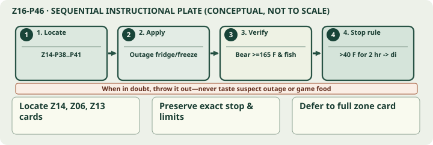

Z16-P46 · Field reference atlas · New manuscript
Food Cold-Chain, Safe Cooking Temperatures and Outage Spoilage Index
Harmonize refrigerator, freezer outage timelines, wild-game, fish cooking temperatures, and Clean, Separate, Cook, Chill hygiene across Z14, Z06, and Z13.
When it applies · Power outages, field-game processing, and everyday food-spoilage triage.
Equipment · Full offline reader (Z14, Z06, Z13), primary zone cards, and local emergency and agency references.

Actions
- Keep refrigerator doors closed during outages (cold holds roughly 4 hours; full closed freezer ~48 hours, half-full ~24 hours) and verify at or below 40 F with an appliance thermometer—discarding perishable foods held above 40 F over 2 hours (1 hour if > 90 F) per Z14-P38..P41.[A03, F01, P09]
- Verify internal cooking temperatures strictly with a calibrated food thermometer rather than color: freshwater fish 145 F (Z06-P42), whole-muscle jerky wet-heat 160 F meat and 165 F poultry (Z14-P68, P24), and wild bear, omnivore game at least 165 F for freeze-resistant Trichinella (Z06-P40).[A03, F02, H10, P24]
- Never taste questionable outage or wild-game meat to test safety—pathogenic bacteria and toxins frequently show zero off-odor (Z14-P41, Z06-P43).[A03, F01, H17]
Failure recognition · Tasting warm outage leftovers, refreezing completely thawed warm meat, or relying on freezing to kill bear Trichinella causes severe foodborne illness.[F01, H10]
Verify · Thermometer verification, 4-hour fridge and 40 F thresholds, and zero taste-testing rules stay aligned across zones.[F01, F02, H10]
Stop or change course · Stop and discard any perishable food exceeding safe time-temperature limits or lacking thermometer verification.[F01]
Evidence and editorial notes
- A03 · CDC · How to Make Water Safe in an Emergency (2024-09-19)
- Section: Cross-zone public-health, water, medicine, and sanitation linkage · Conditions: Indexing Z04, Z10, Z13, and Z14 hygiene, boiling, and clinical red flags
Support: Cross-referencing water treatment, wound care, cold-chain food safety, and poison escalation preserves consistent public-health thresholds across zones.
Limitations: Condensed tables never authorize skipping altitude boiling rules, chemical-source rejection, or clinician evaluation. · Conflicting evidence: None noted.
Editorial note: Prevents cross-zone public-health drift. · Specialist reviewer: Public-health reviewer
Primary source · checked 2026-11-24 - F01 · USDA / FDA / CDC · Four Steps to Food Safety (current web edition)
- Section: Clean and Separate · Conditions: Food preparation with safe water and surfaces
Support: Wash hands and separate raw animal foods and juices from ready-to-eat food.
Limitations: Requires safe water or approved hand hygiene substitutes in outages. · Conflicting evidence: None; retained for food safety pack completeness.
Editorial note: Maintains five-pack integrity. · Specialist reviewer: Food safety and public health
Primary source · checked 2026-11-24 - F02 · USDA / FDA / CDC · Four Steps to Food Safety (current web edition)
- Section: Cook > Minimum internal temperature · Conditions: Food preparation with a working food thermometer
Support: Use food-specific safe internal temperatures; visual appearance alone cannot verify cooking.
Limitations: Thermometer calibration and probe placement affect readings. · Conflicting evidence: None; retained for food safety pack completeness.
Editorial note: Maintains five-pack integrity. · Specialist reviewer: Food safety and public health
Primary source · checked 2026-11-24 - H10 · CDC · About Trichinellosis and Safe Wild Game Cooking (2024)
- Section: Trichinellosis prevention in wild bear and omnivore game · Conditions: Handling and cooking wild bear, wild boar, and carnivore/omnivore meat
Support: Wild bear and other omnivorous game can carry freeze-resistant Trichinella larvae; cook thoroughly to USDA-verified safe internal temperature verified with a food thermometer.
Limitations: Freezing wild game meat does not reliably kill Arctic/sylvatic Trichinella species; curing, smoking, or microwaving is unreliable. · Conflicting evidence: None noted.
Editorial note: Critical Z06 wild-game parasite safety rule. · Specialist reviewer: Food-safety microbiologist and veterinarian
Primary source · checked 2026-11-25 - H17 · Minnesota DNR · White-Tailed Deer Hunting and Management in Minnesota (Current web edition)
- Section: Big-game seasonal ecology and field-hygiene cooling · Conditions: White-tailed deer habitat, rut/winter yarding, and meat spoilage limits
Support: Rapid cooling below 40 F, keeping carcasses clean of gut contents and dirt, and protecting meat from insects prevent bacterial spoilage.
Limitations: Warm autumn weather accelerates spoilage within hours; abandon harvest if safe transport and cooling cannot be achieved. · Conflicting evidence: None noted.
Editorial note: Connects Z06 harvest to cold-chain food safety. · Specialist reviewer: Wildlife manager and food-safety specialist
Primary source · checked 2026-11-25 - P09 · NCHFP · Using Pressure Canners (current web edition)
- Section: Headspace, Jar Preparation, Two-Piece Lids, and Cooling Seals · Conditions: Mason-type canning jars with two-piece metal lids and screw bands
Support: Use true canning jars (never commercial mayonnaise jars), leave exact recipe headspace, remove trapped air bubbles, wipe jar rims clean, tighten bands fingertip-tight only, and let jars cool undisturbed 12–24 hours before checking vacuum seals and removing rings for storage.
Limitations: Inverting jars, tightening bands after cooling, or re-using flat sealing lids causes seal failure and silent spoilage. · Conflicting evidence: None; directly targets top home-canning mechanical failures.
Editorial note: Grounds jar-seal mechanics and inspection cards in Z14. · Specialist reviewer: Food preservation specialist
Primary source · checked 2026-11-24 - P24 · USDA FSIS · How can I make meat or poultry jerky at home? (2025-02-04)
- Section: USDA procedure for meat and poultry jerky · Conditions: USDA FSIS home jerky process with wet heat before drying
Support: Verify 160°F for meat or 165°F for poultry before dehydration, then use the same procedure’s controlled drying conditions.
Limitations: Preheating and drying are linked; texture does not verify pathogen reduction or shelf stability after a deviation. · Conflicting evidence: See A02 claim audit for boundaries.
Editorial note: Added in A02 to separate a consequential source boundary. · Specialist reviewer: Food process authority and Extension
Primary source · checked 2026-11-25
Source lineage · New manuscript (Z16 P20 food safety index) · Classification · New manuscript.